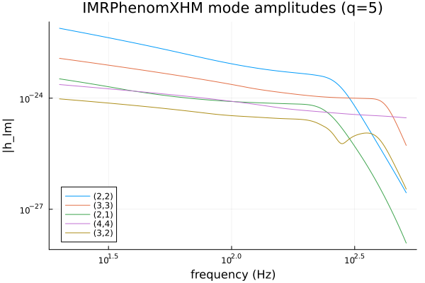
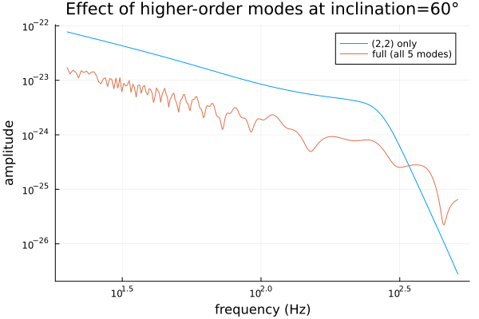

Higher-Order Modes: IMRPhenomXHM
IMRPhenomD/IMRPhenomXAS model only the dominant (2,2) gravitational-wave harmonic — fine for comparable-mass, close-to-face-on systems, but subdominant harmonics ((2,1),(3,3),(3,2),(4,4) in this package's scope) carry real signal power for asymmetric mass ratios and/or larger inclinations. IMRPhenomXHM adds exactly those four modes on top of IMRPhenomXAS's aligned-spin (2,2) (see that file's module docstring): still aligned-spin, still frequency-domain, but multi-mode. This is the same higher-mode content ripple/lalsimulation expose via a ModeArray; here every mode is available individually through h_lm, or pre-summed into polarizations through hphc.
To make the higher modes visible at all, this tutorial uses a deliberately asymmetric binary (mass ratio q = m1/m2 = 5) — higher-mode content grows with mass-ratio asymmetry.
using GravitationalWaveforms, Plots
gr()
m1, m2 = 50.0, 10.0 # q = 5
chi1, chi2 = 0.2, 0.1
dL = 1.0 # Gpc
f_ref = 20.0 # Hz -- required for IMRPhenomXHM (no default; see h_lm's docstring)
f = collect(20.0:0.5:512.0)Individual modes
h_lm returns a single mode's complex frequency-domain strain, h_{l,-m}(f), for (l,m) in (2,2),(2,1),(3,3),(3,2),(4,4):
modes = [(2, 2), (3, 3), (2, 1), (4, 4), (3, 2)]
h = Dict(lm => h_lm(IMRPhenomXHM(), lm[1], lm[2], f, m1, m2, chi1, chi2, dL; f_ref=f_ref) for lm in modes)plot(f, [abs.(h[lm]) for lm in modes]; xscale=:log10, yscale=:log10,
label=permutedims(["($l,$m)" for (l, m) in modes]),
xlabel="frequency (Hz)", ylabel="|h_lm|", title="IMRPhenomXHM mode amplitudes (q=5)",
legend=:bottomleft)
(2,2) dominates throughout, as expected, but the subdominant modes are not negligible — (3,3) in particular sits only a factor of a few below (2,2) for this mass ratio, and every mode's amplitude grows relative to (2,2) as q increases further (try m1, m2 = 80.0, 5.0 above and re-run). At q = 1 (equal mass), the odd-m modes ((2,1),(3,3),(3,2) — anything with m odd relative to the mass difference) vanish identically by symmetry; IMRPhenomXHM's scope is deliberately the four modes that don't.
Full polarizations: hphc
hphc sums all five modes (plus their -m partners via aligned-spin symmetry) into (hp, hc) at a given inclination and reference phase — the quantity you'd actually feed a detector-response calculation:
inclination = pi / 3 # 60 degrees -- away from face-on, where HM content is more visible
phiRef = 0.0
hp, hc = hphc(IMRPhenomXHM(), f, m1, m2, chi1, chi2, dL, inclination, phiRef; f_ref=f_ref)Compare the full multi-mode amplitude against a (2,2)-only reconstruction (IMRPhenomXAS, scaled by the same inclination-dependent spherical-harmonic factor h_lm's (2,2) branch already includes) to see how much the higher modes actually change the signal:
amp22_only = abs.(h[(2, 2)]) # the (2,2) mode alone, same normalization as h_lm
amp_full = abs.(hp) # hp is already complex-valued in the frequency domain
plot(f, [amp22_only amp_full]; xscale=:log10, yscale=:log10,
label=["(2,2) only" "full (all 5 modes)"], xlabel="frequency (Hz)", ylabel="amplitude",
title="Effect of higher-order modes at inclination=60°")
The two curves are close but visibly distinct — mostly at higher frequencies, where the subdominant modes' own merger/ringdown features sit at different frequencies than (2,2)'s (each mode rings down at its own quasi-normal-mode frequency; see IMRPhenomXHM_qnm.jl), which is exactly the feature real parameter estimation on asymmetric-mass-ratio, non-face-on events uses higher modes to break degeneracies with.
Next: the Precession tutorial goes back to the (2,2)-only mode content but adds misaligned spins — the other physical effect IMRPhenomD/IMRPhenomXAS/IMRPhenomXHM all leave out.
This page was generated using Literate.jl.